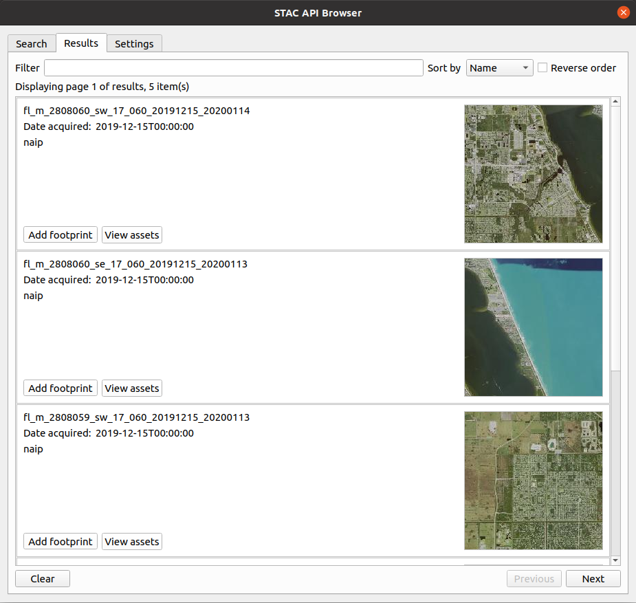
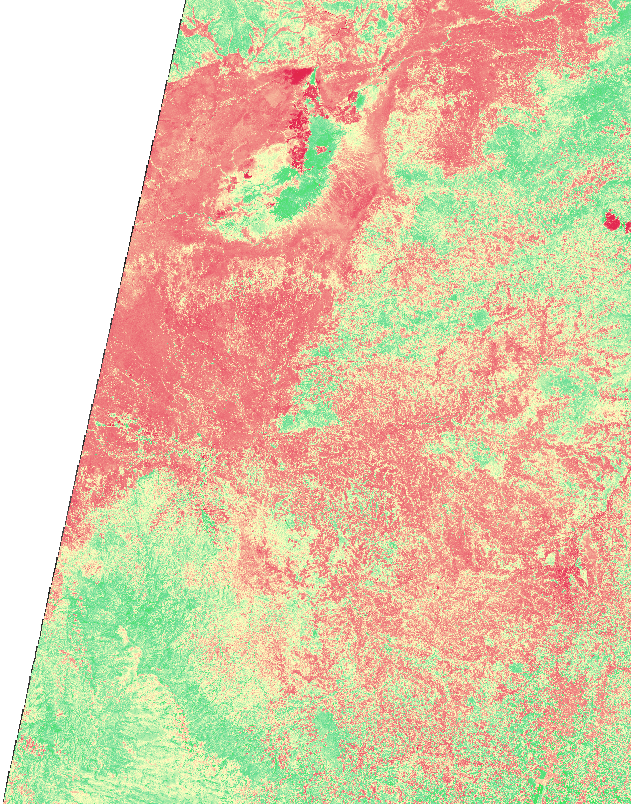

Tutorials
This page contains a tutorial that provides a step by step guide on how to use the plugin to get imagery that can be used in doing NDVI analysis in QGIS.
Calculating NDVI using Sentinel 2 Imagery
What is NDVI (Normalized Difference Vegetation Index)
NDVI is an indicator used in assessing whether the target(e.g. space imagery) being observed contains live green vegetation.
NDVI is built from the red(R) and near-infrared (NIR) bands. The normalized vegetation index highlights the difference between the red band and the near-infrared band.
NDVI = (NIR - R) / (NIR + R)
This index is susceptible to the vegetation intensity and quantity.
NDVI values range from -1 to +1, the negative values correspond to surfaces other than plant covers, such as snow, water, or clouds for which the red reflectance is higher than the near-infrared reflectance. For bare soil, the reflectances are approximately the same in the red and near-infrared bands, the NDVI presents values close to 0.
The vegetation formations have positive NDVI values, generally between 0.1 and 0.7. The highest values correspond to the densest cover.
NDVI is used in agriculture to assess the strength and quantity of vegetation by analyzing remote sensing measurements. NDVI is often used in precision agriculture decision-making tools.
NDVI calculator on data provided using the plugin
The plugin through STAC API catalogs can provide imagery that can be downloaded and used to calculate NDVI in the QGIS desktop application.
Follow the below steps to calculate NDVI on imagery acquiring the data using the plugin.
- Load the STAC API Browser plugin, then select a STAC API provider that offers imagery that contain assets with infrared and red bands.
- Search for the required items in the selected STAC API catalog. 
Screenshot showing available items one of Microsoft Planetary Computer catalog collections.
- From the search results, select View assets on the item that contain targeted imagery and click Add asset as layer to load the required assets into QGIS.
- After the assets have been loaded successfully into QGIS as a COG layers.
Open the raster calculator that is available from Raster > Raster Calculator menu or
from the Processing Toolbox.
- Inside the calculator dialog, add the NDVI formula NDVI = (NIR - R) / (NIR + R) into the expression text box, where NIR is the layer with infrared band and R is the layer with the red band.
After adding the formular, click Ok to execute the formula. If the calculation is successful the resulting layer with NDVI computation will be loaded into QGIS.

Example of a styled NDVI imagery.
See the user guide for more information about how to add imagery using the plugin.